СП 386.1325800.2018 «Конструкции светопрозрачные из поликарбоната. Правила проек»
О документе: разработчики, утверждение, регистрация, ключевые слова
СВОД ПРАВИЛ СП 386.1325800.2018
Издание официальное
Москва 2018
1 ИСПОЛНИТЕЛЬ - Акционерное общество «Центральный научноисследовательский и проектно-экспериментальный институт промышленных зданий и сооружений» (АО «ЦНИИПромзданий»)
2 ВНЕСЕН Техническим комитетом по стандартизации ТК 465 «Строительство»
3 ПОДГОТОВЛЕН к утверждению Департаментом градостроительной деятельности и архитектуры Министерства строительства и жилищнокоммунального хозяйства Российской Федерации (Минстрой России)
4 УТВЕРЖДЕН приказом Министерства строительства и жилищнокоммунального хозяйства Российской Федерации от 11 июля 2018 г. № 417/пр и введен в действие с 12 января 2019 г.
5 ЗАРЕГИСТРИРОВАН Федеральным агентством по техническому регулированию и метрологии (Росстандарт)
В случае пересмотра (замены) или отмены настоящего свода правил соответствующее уведомление будет опубликовано в установленном порядке. Соответствующая информация, уведомление и тексты размещаются также в информационной системе общего пользования -на официальном сайте разработчика (Минстрой России) в сети Интернет
© Минстрой России, 2018
Настоящий нормативный документ не может быть полностью или частично воспроизведен, тиражирован и распространен в качестве официального издания на территории Российской Федерации без разрешения Минстроя России
Дата введения 2019-01-12
УДК ОКС 91.080.99
Ключевые слова: поликарбонат, поликарбонатные панели, поликарбонатные конструкции, светопрозрачные конструкции, модульные поликарбонатные системы, естественное освещение, заполнение проемов
ИСПОЛНИТЕЛЬ
АО «НИЦ
«Строительство»
наименование организации
Руководитель
Генеральный
разработки
директор
СОИСПОЛНИТЕЛЬ
АО
| «ЦНИИПромзданий» наименование | «ЦНИИПромзданий» наименование | |
|---|---|---|
| Руководитель разработки | Генеральный директор | В.В. Гранев |
| Руководитель темы | Заместитель генерального директора | Д.К. Лейкина |
| Исполнитель | Исполнитель | Г.В. Океанов |
А.В. Кузьмин
Введение
6 ВВЕДЕН ВПЕРВЫЕ
Настоящий свод правил разработан в соответствии с федеральными законами от 27 декабря 2002 г. № 184-ФЗ «О техническом регулировании», от 30 декабря 2009 г. № 384-ФЗ «Технический регламент о безопасности зданий и сооружений», от 22 июля 2008 г. № 123-ФЗ «Технический регламент о требованиях пожарной безопасности», от 23 ноября 2009 г. № 261-ФЗ «Об энергосбережении и о повышении энергетической эффективности и о внесении изменений в отдельные законодательные акты Российской Федерации».
Настоящий свод правил разработан с учетом ГОСТ 27751-2014 Надежность строительных конструкций и оснований. Основные положения, СП 20.13330.2016 «СНиП 2.01.07-85* Нагрузки и воздействия».
Свод правил разработан авторским коллективом АО «ЦНИИпромзданий»: руководитель темы -канд. архитектуры Д.К. Лейкина ; ответственный исполнитель Г.В. Океанов .
Правила проектирования
Light transparent polycarbonate structures. Design rules
1Область применения
Настоящий свод правил распространяется на проектирование новых, реконструкцию и капитальный ремонт существующих конструкций светопрозрачных из поликарбоната с каркасом из алюминиевых, стальных, деревянных и полимерных элементов, применяемых в зданиях различного назначения.
2Нормативные ссылки
В настоящем своде правил использованы нормативные ссылки на следующие документы:
ГОСТ 19177-81 Прокладки резиновые пористые уплотняющие. Технические условия
ГОСТ 25621-83 Материалы и изделия полимерные строительные герметизирующие и уплотняющие. Классификация и общие технические требования
ГОСТ 26602.2-99 Блоки оконные и дверные. Методы определения воздухо- и водопроницаемости
ГОСТ 26602.3-2016 Блоки оконные и дверные. Метод определения звукоизоляции
ГОСТ 27751-2014 Надежность строительных конструкций и оснований. Основные положения
ГОСТ 30778-2001 Прокладки уплотняющие из эластомерных материалов для оконных и дверных блоков. Технические условия
ГОСТ 31937-2011 Здания и сооружения. Правила обследования и мониторинга технического состояния
ГОСТ 33079-2014 Конструкции фасадные светопрозрачные навесные.
Классификация. Термины и определения
ГОСТ 33792-2016 Конструкции фасадные светопрозрачные. Методы определения воздухо- и водопроницаемости
ГОСТ EN 410-2014 Стекло и изделия из него. Методы определения оптических характеристик. Определение световых и солнечных характеристик
ГОСТ EN 675-2014 Стекло и изделия из него. Методы определения тепловых характеристик. Метод определения сопротивления теплопередаче методом измерения теплового потока
ГОСТ Р 56712-2015 Панели многослойные из поликарбоната. Технические условия
СП 2.13130.2012 Системы противопожарной защиты. Обеспечение огнестойкости объектов защиты (с изменением № 1)
СП 4.13130.2013 Системы противопожарной защиты. Ограничение распространения пожара на объекты защиты. Требования к объемнопланировочным и конструктивным решениям
СП 7.13130.2013 Отопление, вентиляция и кондиционирование Требования пожарной безопасности
СП 16.13330.2017 «СНиП II-23-81* Стальные конструкции»
СП 20.13330.2016 «СНиП 2.01.07-85* Нагрузки и воздействия»
СП 28.13330.2017 «СНиП 2.03.11-85 Защита строительных конструкций от коррозии»
СП 50.13330.2012 «СНиП 23-02-2003 Тепловая защита зданий»
СП 51.13330.2011 «СНиП 23-03-2003 Защита от шума» (с изменением № 1)
СП 52.13330.2016 «СНиП 23-05-95* Естественное и искусственное освещение»
СП 54.13330.2016 «СНиП 31-01-2003 Здания жилые многоквартирные»
СП 60.13330.2016 «СНиП 41-01-2003 Отопление, вентиляция и кондиционирование воздуха»
СП 64.13330.2017 «СНиП II-25-80 Деревянные конструкции» (с изменением № 1)
СП 70.13330.2012 «СНиП 3.03.01-87 Несущие и ограждающие конструкции» (с изменениями № 1, № 3)
СП 118.13330.2012 «СНиП 31-06-2009 Общественные здания и сооружения» (с изменениями № 1, № 2)
СП 128.13330.2016 «СНиП 2.03.06-85 Алюминиевые конструкции»
СП 255.1325800.2016 Здания и сооружения. Правила эксплуатации.
Основные положения
СП 363.1325800.2017 Покрытия светопрозрачные и фонари зданий и сооружений. Правила проектирования
Примечание - При пользовании настоящим сводом правил целесообразно проверить действие ссылочных документов в информационной системе общего пользования -на официальном сайте федерального органа исполнительной власти в сфере стандартизации в сети Интернет или по ежегодному информационному указателю «Национальные стандарты», который опубликован по состоянию на 1 января текущего года, и по выпускам ежемесячного информационного указателя «Национальные стандарты» за текущий год. Если заменен ссылочный документ, на который дана недатированная ссылка, то рекомендуется использовать действующую версию этого документа с учетом всех внесенных в данную версию изменений. Если заменен ссылочный документ, на который дана датированная ссылка, то рекомендуется использовать версию этого документа с указанным выше годом утверждения (принятия). Если после утверждения настоящего свода правил в ссылочный документ, на который дана датированная ссылка, внесено изменение, затрагивающее положение, на которое дана ссылка, то это положение рекомендуется применять без учета данного изменения. Если ссылочный документ отменен без замены, то положение, в котором дана ссылка на него, рекомендуется применять в части, не затрагивающей эту ссылку. Сведения о действии сводов правил целесообразно проверить в Федеральном информационном фонде стандартов.
3Термины и определения
В настоящем своде правил применены термины по [1], [2], [3], СП 17.13330, СП 50.13330, СП 54.13330, СП 118.13330, СП 128.13330, а также следующие термины с соответствующими определениями:
- 3.1бескаркасная конструкция
- Светопрозрачная ограждающая конструкция без собственного силового каркаса с креплением светопрозрачных элементов с помощью кронштейнов различных видов непосредственно к строительным конструкциям здания.Источник: ГОСТ 33079-2014, пункт 2.8
- 3.2заполнение светопрозрачное
- Светопрозрачные элементы, плоские или объемные, установленные в проемы каркаса светопрозрачных конструкций.
- 3.3канал
- Полость панели, образованная его горизонтальными слоями и вертикальными или наклонными ребрами жесткости. Стороны каналов располагаются параллельно вдоль панели.Источник: ГОСТ Р 56712-2015, пункт 3.7
- 3.4каркас
- Плоская или пространственная система профилей различного сечения, из различных материалов, предназначенная для крепления заполнения светопрозрачных конструкций и передачи нагрузок и воздействий на несущие конструкции здания или сооружения.
- 3.5панели поликарбонатные
- Светопропускающие строительные изделия из поликарбоната, полученные методами экструзии или литья, предназначенные для заполнения проемов светопрозрачных ограждающих конструкций.
4Общие положения
СП 386.1325800.2018 профильной системы, герметиками, уплотнителями и другими материалами и конструкциями следует определять по приложению В.
5Требования к материалам, применяемым в конструкциях светопрозрачных из поликарбоната
6Требования к проектированию конструкций светопрозрачных из поликарбоната
7Требования качества и безопасной эксплуатации конструкций светопрозрачных из поликарбоната
8Конструкции светопрозрачные с монолитными поликарбонатными панелями
9Конструкции светопрозрачные с многослойными поликарбонатными панелями
СП 386.1325800.2018 отверстия и место установки крепежных изделий принимают с учетом 4.22. Минимальное расстояние от края отверстия до кромки панели 50 мм.
10Конструкции светопрозрачные с профилированными поликарбонатными панелями
11Модульные поликарбонатные конструкции
АПриложение А. Классификация конструкций светопрозрачных из поликарбоната по конструктивным признакам
Таблица А.1
| Описание конструкции | Эскиз конструкции |
|---|---|
| Плоские КСП с несущими элементами каркаса | Плоские КСП с несущими элементами каркаса |
| Несущие прямолинейные профили каркаса ориентированы вдоль пролета несущей конструкции. Расчет каркаса КСП следует выполнять без учета работы поликарбонатных панелей заполнения. Заполнение следует рассматривать как однопролетную систему без дополнительной опоры или как многопролетную систему с дополнительными опорными элементами, установленными с определенным шагом. Монтаж панелей осуществляется за счет крепления вдоль несущих | |
| Объемные КСП с несущими элементами каркаса | Объемные КСП с несущими элементами каркаса |
| Несущие изогнутые профили каркаса расположены вдоль пролета несущей конструкции. Расчет каркаса КСП следует выполнять без учета работы |
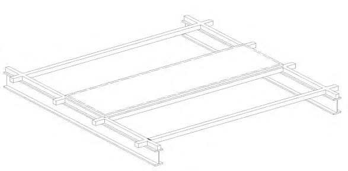
поликарбонатных панелей заполнения.
Заполнение следует рассматривать как однопролетную систему без дополнительной опоры или как многопролетную систему с дополнительными опорными элементами, установленными с определенным шагом.
Установка панелей осуществляется за счет крепления их к несущим профилям, с использованием точечных креплений или затяжек
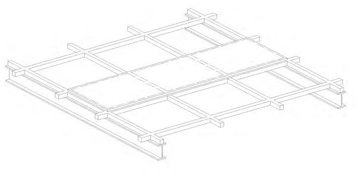
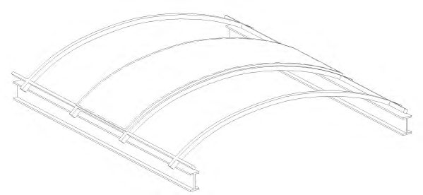
Плоские КСП без дополнительных несущих элементов
Работа поликарбонатных панелей обеспечивается за счет их конструктивных особенностей.
Работу поликарбонатных панелей следует рассматривать по однопролетной схеме без дополнительных опор или как многопролетную систему с дополнительными опорными элементами, установленными с определенным шагом.
Установка поликарбонатных панелей осуществляется посредством
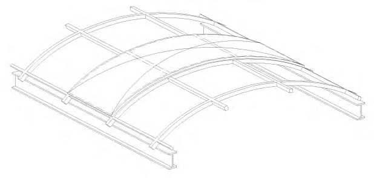
комплектных профилей или крепежных деталей, за счет конструктивных возможностей системы
Объемные КСП без дополнительных несущих элементов
Работа поликарбонатных панелей обеспечивается за счет их конструктивных особенностей.
Работу поликарбонатных панелей следует рассматривать по однопролетной схеме или как многопролетную систему с дополнительными опорными элементами, установленными с определенным шагом.
Установка поликарбонатных панелей осуществляется посредством комплектных профилей или крепежных деталей, за счет конструктивных возможностей системы
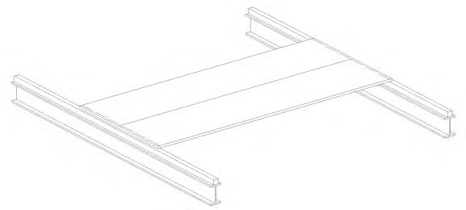
Объемно-пространственные оболочки из поликарбоната
Работа объемнопространственных оболочек, одно- и многослойных, обеспечивается за счет их геометрии.
Оболочка требует опирания по периметру на основание в виде рамы,
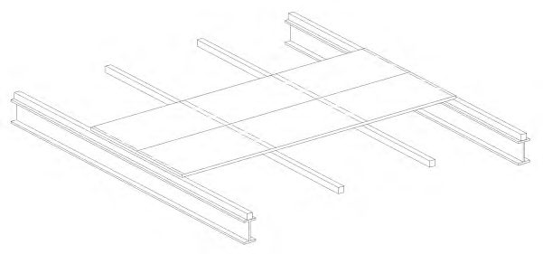
плоской или пространственной.
Крепление оболочки к несущим элементам рамы осуществляется профилями или точечными креплениями
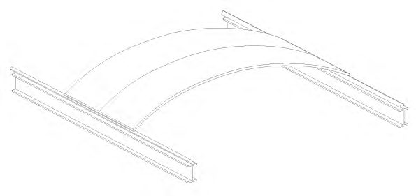
Приложение Б
Типовые схемы узлов и деталей
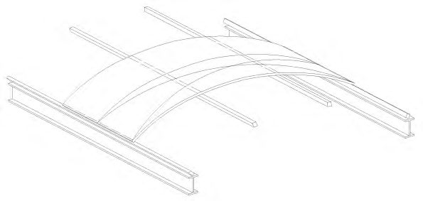
1 - поликарбонатная панель; 2 - базовый алюминиевый профиль с резиновым уплотнителем; 3 - прижимной алюминиевый профиль с резиновым уплотнителем; 4 - алюминиевый профиль с резиновым уплотнителем; 5 - элемент металлического каркаса; 6 - торцевой профиль; 7 - фиксатор торцевого профиля; 8 - фасонный металлический элемент; 9 - уплотнитель; 10 - ПВХ мембрана; 11 - утеплитель; 12 - проставка
Рисунок Б.1 -Детали покрытий из многослойных поликарбонатных панелей
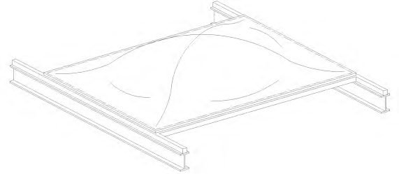
1 - поликарбонатная панель; 2 - базовый алюминиевый профиль с резиновым уплотнителем; 3 - прижимной алюминиевый профиль с резиновым уплотнителем; 4 -фасонный металлический элемент, 5 - отлив; 6 - утеплитель; 7 - проставка
Рисунок Б.2 - Детали вертикальных ограждающих конструкций из многослойных поликарбонатных панелей
1 - модульная поликарбонатная панель; 2 - поликарбонатный коннектор; 3 - закладная деталь; 4 - элемент металлического каркаса; 5 - заглушка коннектора; 6 - торцевой элемент алюминиевый с капельником; 7 - алюминиевый профиль; 8 - уплотнитель; 9 - фасонный металлический элемент
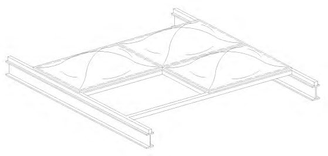
Рисунок Б.3 - Детали покрытия из модульных поликарбонатных панелей
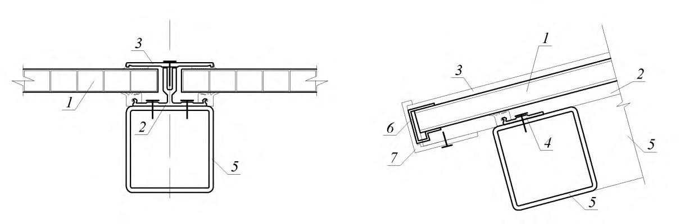
1 - модульная поликарбонатная панель; 2 - элемент металлического каркаса; 3 - уплотнитель; 4 - алюминиевый профиль; 5 - закладная деталь; 6 - фасонные металлические элементы; 7 - отлив; 8 - утеплитель
Рисунок Б.4 - Детали вертикальных ограждающих конструкций из плоских многослойных модульных поликарбонатных панелей
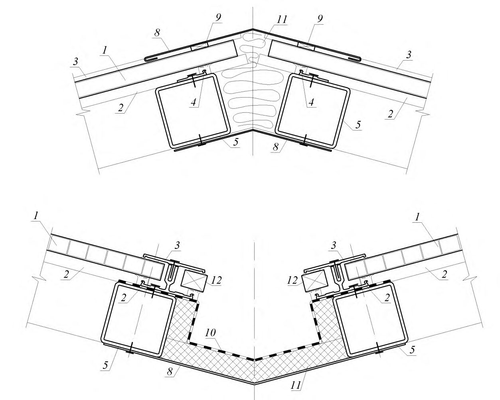
1 - поликарбонатная панель; 2 - алюминиевый профиль; 3 - уплотнитель; 4 - поликарбонатная вставка; 5 - отлив; 6 - герметик
Рисунок Б.5 - Детали вертикальных ограждающих конструкций из сдвоенных модульных поликарбонатных панелей и с термоизолированным каркасом
ВПриложение В. Химическая устойчивость поликарбонатных строительных материалов
Таблица В.1
| Вещество | Концентрация ,% | Устойчивость |
|---|---|---|
| Неорганические соли | Неорганические соли | Неорганические соли |
| Натрий хлористый | 10 | + |
| Нитрат калия | 10 | + |
| Бихромат калия | 10 | ± |
| Сульфат натрия | 10 | + |
| Хлорид аммония | 10 | + |
| Карбонат натрия | 10 | + |
| Бикарбонат натрия | 10 | + |
| Щелочи | ||
| Гидроксид натрия | 1 | + |
| Гидроксид натрия | 10 | + |
| Гидроксид аммония | 10 | - |
| Гидроксид кальция | 10 | + |
| Горюче-смазочные материалы | Горюче-смазочные материалы | Горюче-смазочные материалы |
| Силиконовое масло | + | |
| Парафиновое масло | + |
| Вещество | Концентрация, % | Устойчивость |
|---|---|---|
| Неорганические кислоты | Неорганические кислоты | Неорганические кислоты |
| Соляная кислота | 35 | - |
| 10 | + | |
| Серная кислота | 70 | + |
| 30 | + | |
| Азотная кислота | 40 | ± |
| 10 | ± | |
| Хромовая кислота | 10 | + |
| Фтороводородная концентрированная кислота | + | |
| Органические кислоты | Органические кислоты | Органические кислоты |
| Уксусная кислота | 70 | + |
| 10 | + | |
| Муравьиная кислота | 30 | + |
| Молочная кислота | 5 | + |
| Щавелевая кислота | 10 | + |
| Бензольная кислота | 10 | + |
| Моторное масло | + | Олеиновая кислота | 10 | + | ||
|---|---|---|---|---|---|---|
| Бензин | - | Прочие продукты | ||||
| Керосин | + | Бензол | - | |||
| Дизельное топливо | + | Толуол | - | |||
| Пластификаторы | N-гептан | + | ||||
| Трикрезил фосфат | + | Циклогексан | + | |||
| Диоктиладипат | + | Метилизобутил | ± | |||
| Диоктилфталат | + | Ацетон | - | |||
| Бутилстеорат | + | Бутилацетат | - | |||
| Спирты | Метилметакрилат | - | ||||
| Метиловый | - | Акрилонитрил | - | |||
| Этиловый | 50 | + | Винилацетат | - | ||
| N-бутиловый | + | Стирен | - | |||
| Этиленгликоль | + | Этиловый эфир | - | |||
| Растворители | Диэтилентриамин | ± | ||||
| Метиленхлорид | - | Этилендиамин | ± | |||
| Этиленхлорид | - | Триэтаноламин | + | |||
| Трихлорэтан | - | Фенол | 5 | - | ||
| Тэтрахлорэтан | - | Крезол | + | |||
| Хлороформ | - | Формалин | + | |||
| М-крезол | - | Тетралин | ± | |||
| Пиридин | - | Этилацетат | ± | |||
| Диоксин | ± | Ацетонитрил | ± | |||
| Тетрагидрофуран | ± | Карбонтетрахлорид | ± | |||
| Циклогексанон | ± | Перекись водорода | 10 | + | ||
| Диметилформамид | ± | Моющие средства рН=9 | + | |||
| Примечания | Примечания | Примечания | Примечания | Примечания | Примечания | Примечания |
+ - устойчив к воздействию;
- ± - незначительные повреждения;
- неустойчив к воздействию.
- 2 В таблице приведены данные воздействия на поликарбонатные панели в ненапряженном состоянии агрессивных веществ в течение 6 мес.
ГПриложение Г. Классификация строительных изделий из поликарбоната по типам панелей
Таблица Г.1
| Тип панели | Описание | Эскиз |
|---|---|---|
| Панель монолитная из поликарбоната | Плоское светопропускающее изделие из поликарбоната, не имеющее внутренних каналов | |
| Панель многослойная из поликарбоната | Плоское светопропускающее изделие из поликарбоната, состоящие из двух или более параллельных слоев и перемычек между ними, образующих каналы | |
| Панель профилированная из поликарбоната | Светопропускающее изделие из поликарбоната в виде панели, имеющей по длине периодически повторяющиеся |
| ребра жесткости волнообразной, трапециевидной или иной формы | |
|---|---|
| Модульные поликарбонатные панели | Светопропускающее изделие из поликарбоната, составная часть строительной системы. Крепление панелей обеспечивается за счет использования комплектных профилей |
| Объемные оболочки из поликарбоната. | Выпуклые пространственные светопропускающие изделия из поликарбоната в виде оболочек заданной формы. При необходимости объединяются в пакет из нескольких слоев |
ДПриложение Д. Последовательность операций при проектировании конструкций светопрозрачных из поликарбоната
Таблица Д.1
| Стадия проектирования | Факторы, определяющие выбор параметров | Определяемые параметры | Разделы проектной документации |
|---|---|---|---|
| Проектная документация | Архитектурный замысел объекта на основе принятых в архитектурной концепции предварительных функциональных, архитектурно- планировочных и композиционных решений | Форма, место расположения и количество КСП | Раздел «Архитектурные решения» |
| Проектная документация | Архитектурный замысел цветового решения ограждающих конструкций объекта | Основные характеристики и цвет КСП | Раздел «Архитектурные решения» |
| Требования федеральных законов, ГОСТов, сводов правил | Продолжительность инсоляции и уровень естественного освещения помещений, оценка коэффициента общего пропускания солнечной энергии (предварительный расчет) строящегося объекта с учетом расположенных вокруг объекта существующих и проектируемых зданий | |
|---|---|---|
| Требуемые значения сопротивления теплопередаче, воздухопроницаемости, водонепроницаемости, звукоизоляции (расчеты) и выбор конструкций по сертификатам или табличным значениям с классификацией по соответствующим характеристикам. | Расчет конструкций по прочности, устойчивости и деформативности. Подбор материалов КСП, передача данных для расчетной модели объекта | Раздел «Конструктивные и объемно- планировочные решения» |
| Объемные и планировочные параметры поверхности покрытия объекта, представленные в разделе проектной документации «Архитектурные решения» | Составление энергетического паспорта здания с учетом расчетных характеристик светопрозрачного покрытия. | Раздел «Мероприятия по обеспечению соблюдения требований энергетической эффективности и требований оснащенности зданий, строений и сооружений приборами учета используемых энергетических ресурсов» | |
|---|---|---|---|
| Рабочая документация | Конструктивные решения, представленные в разделе проектной документации «Конструктивные и объемно- планировочные решения» | Разработка конструкций узлов сопряжений конструкций светопрозрачных из поликарбоната с прочими ограждающими конструкциями фасадов и покрытия | Рабочие чертежи марки КР (конструктивные решения) |
| Рабочая документация | Техническое задание заводу-изготовителю для разработки чертежей конструкций металлических деталировочных (КМД) | Разработка рабочих чертежей на основе документации предприятия- изготовителя выбранных конструкций | Рабочие чертежи марки КР (конструктивные решения) |
Библиография
- [1] Федеральный закон от 29 декабря 2004 № 190-ФЗ «Градостроительный кодекс Российской Федерации»
- [2] Федеральный закон от 30 декабря 2009 г. № 384-ФЗ «Технический регламент о безопасности зданий сооружений»
- [3] Федеральный закон №123-ФЗ «Технический регламент о требованиях пожарной безопасности»
- [4] СО 153-34.21.122-2003 Инструкция по устройству молниезащиты зданий, сооружений и промышленных коммуникаций
- [5] РД 34.21.122-87 Инструкция по устройству молниезащиты зданий и сооружений
- [6] СП 23-102-2003 Естественное освещение жилых и общественных зданий \_\_\_\_\_\_\_\_\_\_\_\_\_\_\_\_\_\_\_\_\_\_\_\_\_\_\_\_\_\_\_\_\_\_\_\_\_\_\_\_\_\_\_\_\_\_\_\_\_\_\_\_\_\_\_\_\_\_\_\_\_\_\_\_\_\_